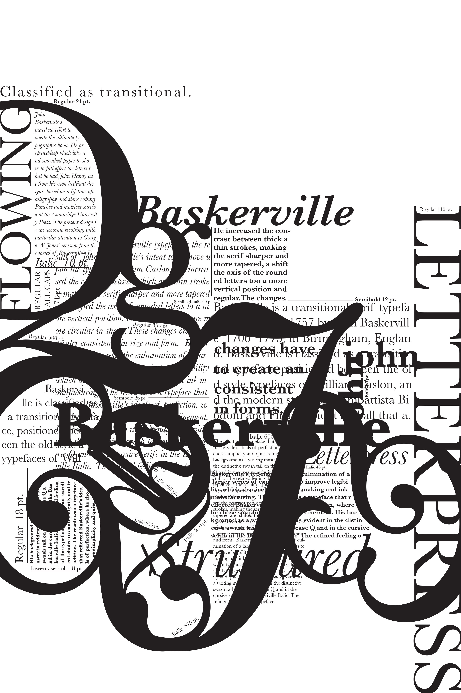
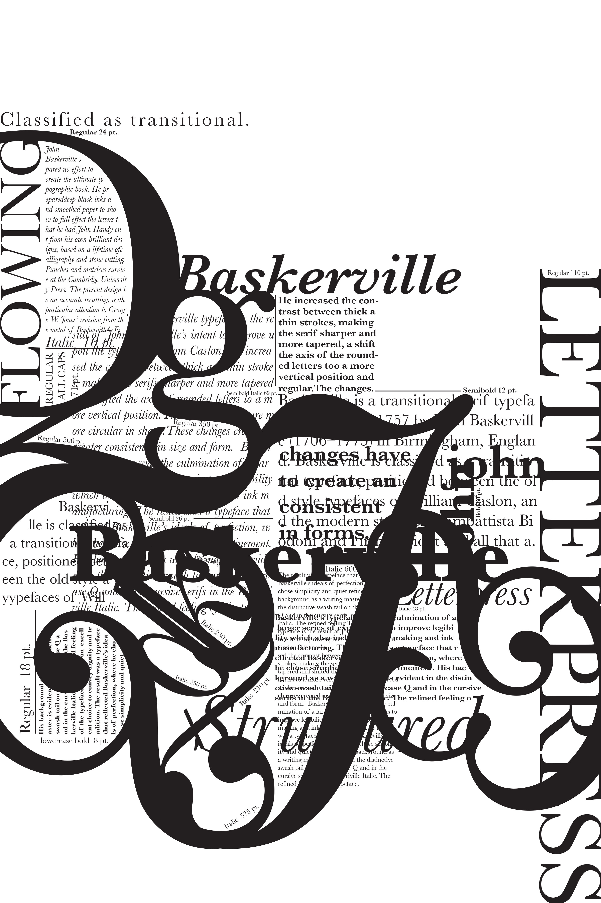

Baskerville
Type Specimen Poster
In typography 1, during my Fall semester of 2011, we had a type specimen project where we were to pick a type and create a 24x36 poster with it. I chose the typeface Baskerville because I think the typeface is beautiful. While focusing on Baskerville's special elements and making the type interesting, we were to focus on our compostion, content, and hierarchy. Creating a poster that will make the type seem interesting, most importantly, we needed to represent the type the best way possible in terms of compostition, content, and hierarchy. I used all different type sizes and different weights and created interesting shapes with Baskerville's greatest aspects to create my poster. We started off creating our posters in 11x17 size and in this size, the poster seemed interesting and had various levels of hierarchy. However, as we were blowing up the posters into 24x36, the hierarchy started to get lost and didn't seem as interesting anymore. That was the biggest challenge. Having to create a poster showing many levels of hierarchy in the 24x36 size. There was lots of revisions and playing around with the type. In this process, I learned that when something looks interesting when it's small, when it's blown up it can distort the whole composition. I learned to always consider my creation being blown up and how it would look. Would it still have the same levels of hierarchy? Would the composition still look interesting? How would it look when it's blown up?